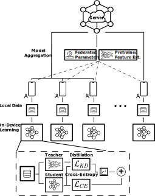
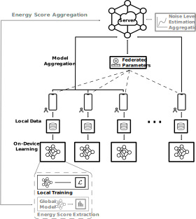

Federated Learning (FL) is a distributed machine learning paradigm that enables learning models from decentralized private datasets, where the labeling effort is entrusted to the clients. While most existing FL approaches assume high-quality labels are readily available on users' devices, in reality, label noise can naturally occur in FL and follows a non-i.i.d. distribution among clients. Due to the non-iid-ness challenges, existing state-of-the-art centralized approaches exhibit unsatisfactory performance. At the same time, previous FL studies rely on data exchange or repeated server-side aid to improve the model's performance. Here, we propose FedLN, a framework to deal with label noise across different FL training stages: FL initialization, on-device model training, and server model aggregation. Specifically, FedLN computes per-client noise-level estimation in a single federated round and improves the models' performance by correcting (or limiting the effect of) noisy samples. Extensive experiments on various publicly available vision and audio datasets demonstrate a 24% improvement on average compared to other existing methods for a label noise level of 70%. We further validate the efficiency of FedLN in human-annotated real-world noisy datasets and report a 9% increase on average in models' recognition rate, highlighting that FedLN can be useful for improving FL services provided to everyday users.
In federated setting, the label noise is directly affected by discrepancies in clients' labeling systems and users' expertize. These discrepancies result in varying label noise profiles across clients. With FedLN, we provide two simple yet effective approaches for estimating a per-client label noise level and correctly identifying any client holding high-quality data.
Under a federated learning regime, clients' local data follow a non-i.i.d. distribution both in terms of data samples and noise profiles, while no global entity can directly access the complete pool of data, rendering data-centric and model decision-based centralized approaches infeasible or ineffective in FL. In FedLN, we exploit per-client noise level estimates to mitigate the effect of noisy labels on the federated model's performance.
|

Adaptive Knowledge Distillation (AKD) |

Noise-aware Federated Averaging (NA-FedAvg) |
|
|
|
|
Deep Nearest Neighbor-based Correction (NNC) |
|
The evaluation of FedLN considers a wide range of label noise scenarios, including noisy real-life data, across multiple classification tasks from both vision and audio domains. State-of-the-art centralized approaches dealing with label noises are considered in our baselines, providing insides into why such techniques can result in unsatisfactory model performance.
FedLN performance on various classification tasks.
FedLN evaluation with in-the-wild label noise data.
Tsouvalas, V., Saeed, A., Ozcelebi, T. and Meratnia, N., 2022. Labeling Chaos to Learning Harmony: Federated Learning with Noisy Labels. arXiv preprint arXiv:2208.09378.
@article{tsouvalas2022federated, title={Labeling Chaos to Learning Harmony: Federated Learning with Noisy Labels},
author={Tsouvalas, Vasileios and Saeed, Aaqib and Ozcelebi, Tanir and Meratnia, Nirvana},
journal={arXiv preprint arXiv:2208.09378}, year={2022}
}